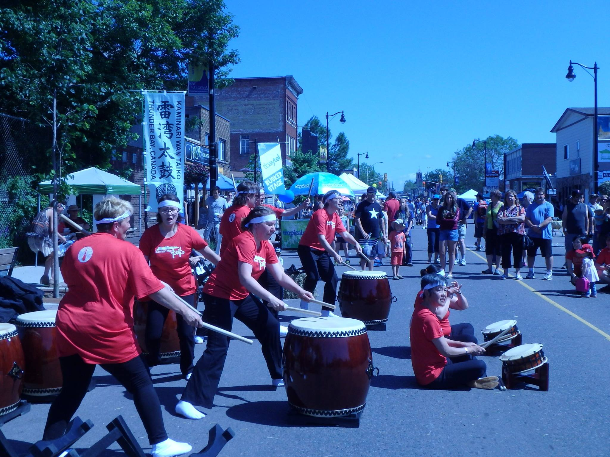

雷湾太鼓 Kaminari Wan Taiko
Thunder Bay's Only Taiko Group
Home
About Us
Photos
Login
Member Resources
Communications
Create A New Post
Homepage

Kaminari Wan Taiko's performance at the 2015 Busker's Festival, July 25th, 2015